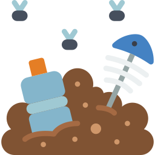

A contaminación do solo consiste na degradación da calidade do chan asociada á presenza de substancias químicas. Este tipo de contaminantes poden ser sólidos, líquidos ou gaseosos; e ocasionan que se afecte ao ciclo da vida das plantas, dos animais e á propia saúde humana.
Algunhas causas poden ser:
As súas consecuencias son:
A través do sistema respiratorio, o radon accede aos pulmóns. Alí descomponse e produce partículas alfa que se fixan ao tecido pulmonar e poden causar mutacións. No peor dos casos, desenvólvense tumores e, finalmente, cancro. Así e como a inhalación deste gas se converteu na segunda causa de morte por cancro de pulmón, só por debaixo do tabaco. Entre os non fumadores, é o principal factor de risco. Estímase que en Galicia morren máis de 300 persoas cada ano por cancros que poden ser atribuídos ao radon.
En Galicia, 42 das 53 comarcas, nas que reside máis da metade da poboación do país, están por riba do límite permitido.
A filtración de radon ás vivendas pode evitarse co peche das fendas polas que entra o gas e coa instalación dunha arqueta de succión (mecanismo para evacuar o radon cara o exterior). Non abonda con ventilar frecuentemente as vivendas xa que o gas deixa de acumularse, mais segue circulando.
Para máis información, visítese a páxina oficial do Laboratorio de Randón de Galicia.